03 / The Product
Voice, words, and a
short clinical questionnaire —
in one flow.

Home / check-in — a live combined-signal preview updates as each signal is completed
Notice the signal. Keep the human.
An early-detection mental-health triage aid that fuses voice, language, and validated clinical questionnaires into one explainable risk signal - private by default, bilingual in English and Urdu from the ground up.
Presented by Iqra Nazir & Faizan Arshad
Agenda
01 / Objective
Depression, anxiety, and related conditions are frequently under-screened, especially where access to mental-health professionals is limited and stigma discourages self-report. MindHx's objective is a private, low-friction check-in that surfaces a risk signal a person can act on.
Voice, text, and three validated questionnaires fused into one explainable score with a genuine per-signal attribution breakdown.
Risk-tier language throughout. Crisis signals short-circuit everything and go straight to Emergency Support.
The core check-in never requires an account. Audio is processed and discarded. Only score/band/themes are ever saved.
01 / Introduction — Why MindHx Matters
MindHx matters because mental health screening is still hard and expensive to access, especially in a country like Pakistan where psychiatrists are scarce and social stigma keeps people from speaking up.
It combines three signals at once - how someone sounds, what they say, and validated PHQ-9, GAD-7, K10 questionnaires - into one clear score with a breakdown of what contributed to it.
Rather than a formal diagnosis, it assesses the severity of the situation and underlying risk factors by detecting themes like grief, trauma, suicide risk, anxiety, depression, and pain, and uses this to route elevated risk straight to a professional. If something like self-harm comes up, it redirects to emergency support immediately, before any score is even shown.
Signing in is optional, only for people who want their check-in history saved, and even then only the score and general themes are stored, never a transcript or written answers. Audio itself is always deleted right after processing. It also works fully in Urdu and English, making it usable locally rather than just another English-only app.
02 / Why This Matters for Pakistan
MindHx is built directly against these four barriers: private and free to try, no account required, fully bilingual, and paired with a real, verified directory of Pakistani providers.
03 / The Product
03 / The Product — A Closer Look
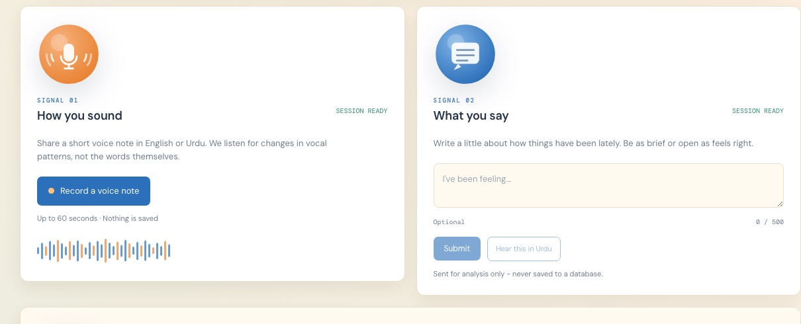
03 / The Product — A Closer Look
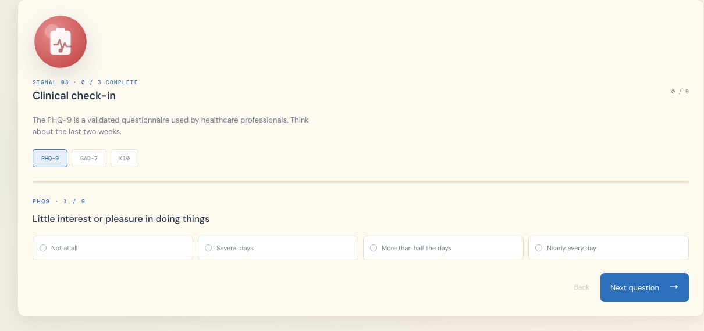
03 / The Product
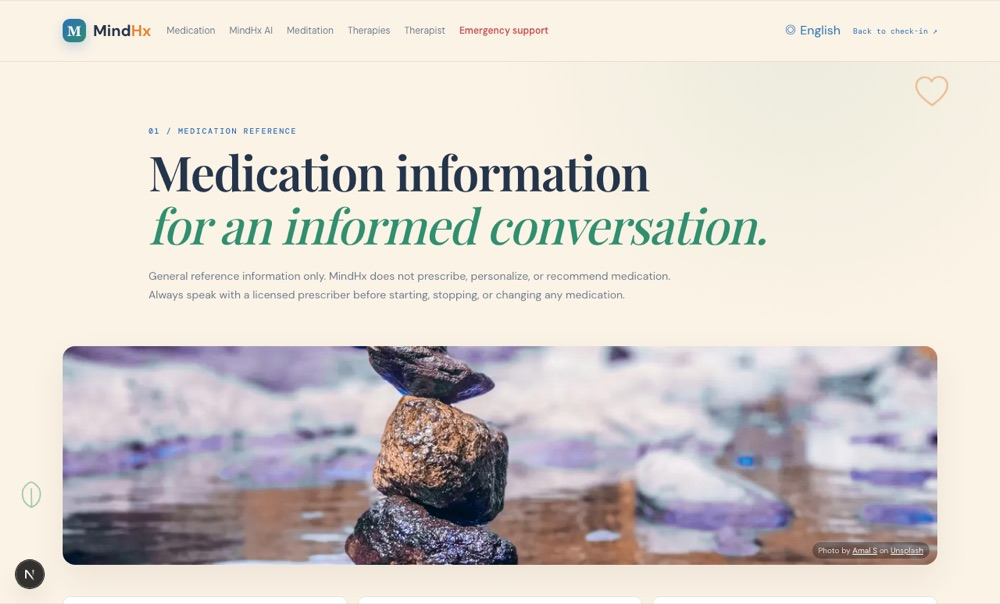
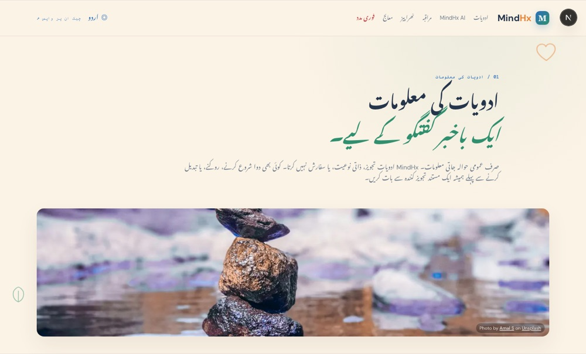
03 / The Product
Each signal - acoustic, linguistic, and clinical - is scored independently first, then combined into one weighted estimate using an additive model. Each term's share in the final number is the real, mathematically exact contribution, not an approximation.
If the voice signal reads flat but the questionnaire answers are mild - or the other way around - that tension is shown honestly, not smoothed into one tidy number.
03 / The Product
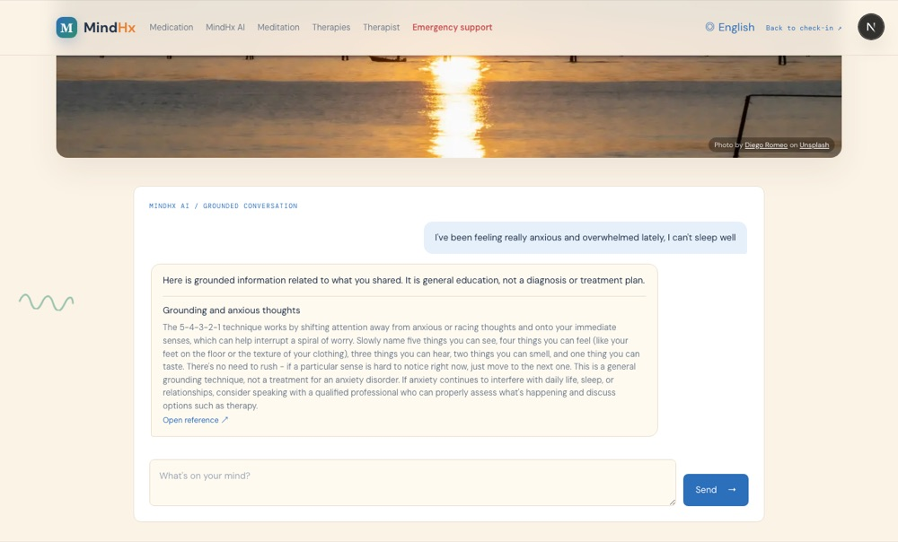
04 / The AI Chatbot — Everyday Support
MindHx also includes an AI chatbot built for everyday stress, anxiety, and burnout - the kind of thing most people never bring up with anyone. It only answers from a fixed, reviewed set of information, so there is no risk of unsafe advice.
Most people here never see a professional for smaller issues like poor sleep, work pressure, or daily anxiety. Through the chatbot they get simple meditation techniques and basic therapy approaches right away - no appointment, no waiting.
It fills a middle ground. Not a replacement for real treatment, but not leaving someone with nothing either. If the conversation turns serious, it stops and redirects to emergency support instead of continuing.
03 / The Product

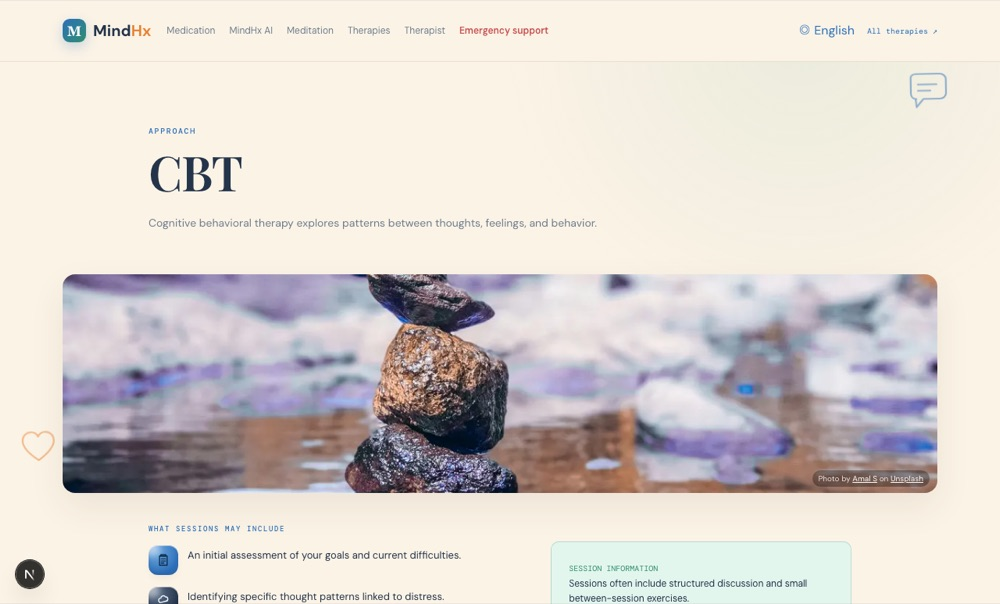
05 / Therapy Approaches
Cognitive behavioral therapy explores patterns between thoughts, feelings, and behavior.
Dialectical behavior therapy teaches emotion regulation, distress tolerance, and interpersonal skills.
A clinician-guided approach for some anxiety and fear responses.
A safety-led approach that respects pacing, choice, and control.
Primary-care or psychiatric review can consider physical contributors, sleep, medicines, and safety.
Structured groups where people with similar experiences share support under trained facilitation.
03 / The Product

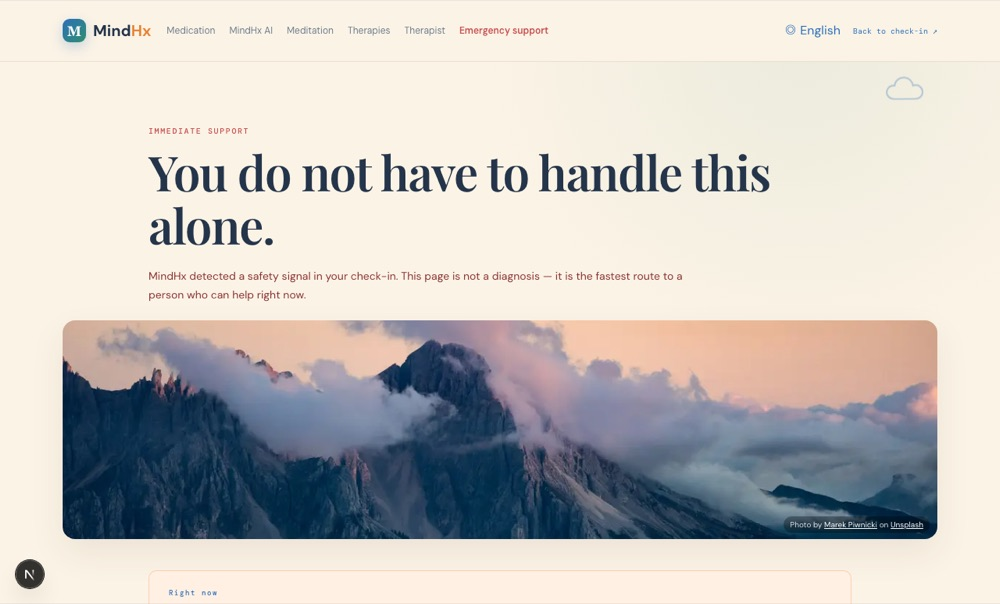
05 / Finding a Therapist
Bring your MindHx screening results to a qualified clinician. They can review your context, symptoms, safety, medical history, and treatment options with you. MindHx flags elevated risk - only a clinician can assess or diagnose.
"I completed a mental-health screening and would like a professional evaluation."
Use a regulated local provider directory, hospital service, university clinic, or established telehealth provider in your country.
Keep your PHQ-9, GAD-7, K10 results, text/voice explanation, current medicines, and questions ready if you choose to share them.
MindHx does not book appointments or provide emergency care.
05 / Finding a Therapist — Find a Professional in Pakistan
A starting point for finding psychiatrists and psychologists in Pakistan. This is not exhaustive and not an endorsement - confirm credentials and details yourself.
05 / Finding a Therapist — Live Doctor Directories
These platforms maintain current, verified individual psychiatrist and psychologist profiles with fees, reviews, and booking - more reliable than a static list for finding an individual provider.
MindHx does not verify real-time availability, fees, or credentials for any listing above. Confirm details directly with the provider before booking.
06 / Core Focus
The single most important design decision in MindHx: built bilingual from the ground up, not translated as an afterthought.
06 / Urdu Language
Every page - the check-in itself, the AI chat, the therapist directory - exists in both English and Urdu, switchable with a single tap in the header, with the entire layout correctly mirroring for Urdu's right-to-left script. A screening tool available only in English quietly excludes most of the people who might actually need it in a country where Urdu is the lingua franca.
06 / اردو (Urdu, RTL)

06 / اردو (Urdu, RTL) — قریبی نظارہ
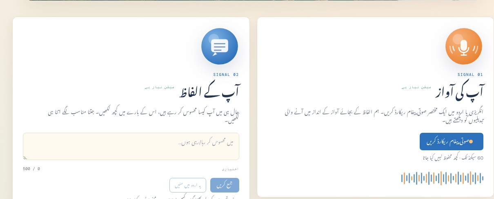
06 / اردو (Urdu, RTL) — قریبی نظارہ
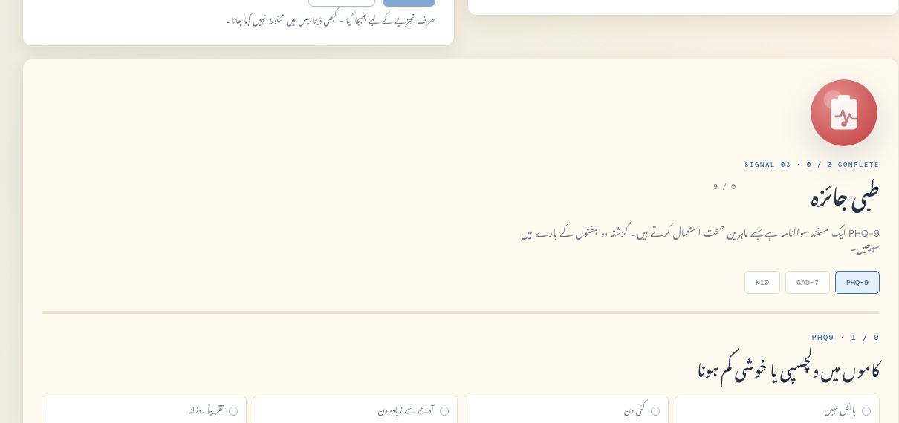
06 / اردو (Urdu, RTL)
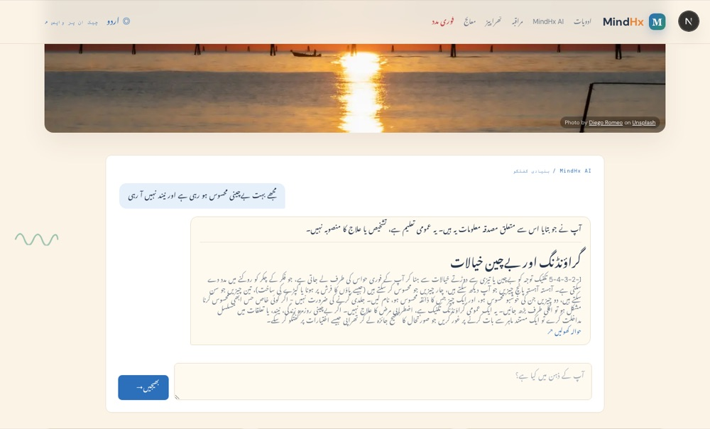
06 / AI چیٹ بوٹ — اردو میں
MindHx کے اندر ایک AI چیٹ بوٹ بھی شامل ہے جو روزمرہ کے عام ذہنی دباؤ، پریشانی اور تھکن جیسے مسائل میں فوری رہنمائی فراہم کرتا ہے۔
یہ چیٹ بوٹ آزادانہ طور پر کچھ بھی نہیں بناتا بلکہ صرف پہلے سے طے شدہ اور محفوظ معلومات کی بنیاد پر جواب دیتا ہے، تاکہ کوئی غلط یا خطرناک مشورہ نہ دیا جائے۔
پاکستان میں زیادہ تر لوگ چھوٹے موٹے ذہنی مسائل جیسے نیند کی کمی، کام کا دباؤ، گھریلو ذمہ داریوں کا بوجھ یا روزمرہ کی بے چینی کے لیے کسی ماہر کے پاس نہیں جاتے۔ اس چیٹ بوٹ کے ذریعے ایسے لوگوں کو سادہ مراقبے کی تکنیکیں اور بنیادی تھراپی کے طریقے فوری طور پر مل جاتے ہیں، بغیر کسی اپائنٹمنٹ یا انتظار کے۔
06 / AI چیٹ بوٹ — اردو میں (جاری)
مثال کے طور پر اگر کسی کو نیند نہیں آ رہی یا ذہنی تناؤ محسوس ہو رہا ہے، تو وہ فوراً سانس لینے کی مشقیں، ذہنی سکون کی تکنیکیں یا سادہ طرزِ عمل تھراپی کے مشورے حاصل کر سکتا ہے۔
یہ خاص طور پر ان لوگوں کے لیے مفید ہے جو یہ سمجھتے ہیں کہ ان کا مسئلہ اتنا بڑا نہیں کہ ڈاکٹر کے پاس جایا جائے، مگر پھر بھی روزمرہ زندگی متاثر ہو رہی ہوتی ہے۔ اس طرح یہ چیٹ بوٹ ایک درمیانی درجے کی مدد فراہم کرتا ہے۔ نہ تو یہ طبی علاج کا متبادل ہے اور نہ ہی صارف کو بغیر رہنمائی کے چھوڑتا ہے۔
اگر کبھی بات زیادہ سنگین ہو جائے، جیسے خودکشی کے خیالات ظاہر ہوں، تو چیٹ بوٹ فوراً بات چیت روک کر صارف کو ایمرجنسی سپورٹ کی طرف بھیج دیتا ہے۔ اس طرح MindHx صرف ایک سکریننگ ٹول نہیں بلکہ روزمرہ کی ذہنی صحت کی دیکھ بھال کا ایک عملی ساتھی بھی بن جاتا ہے، خاص طور پر اس ملک میں جہاں تھراپی تک رسائی محدود اور مہنگی ہے۔
06 / اردو (Urdu, RTL)
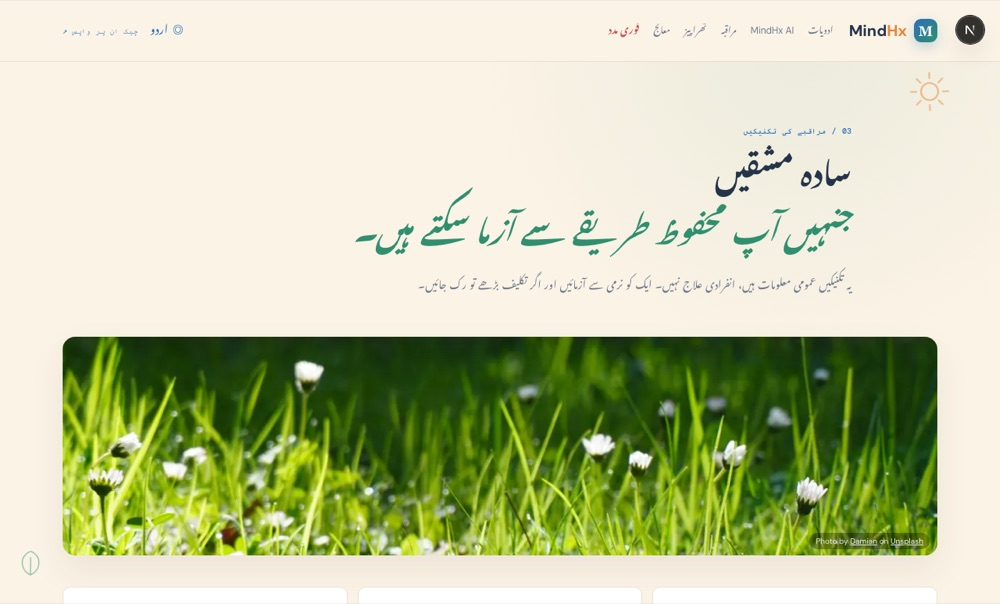
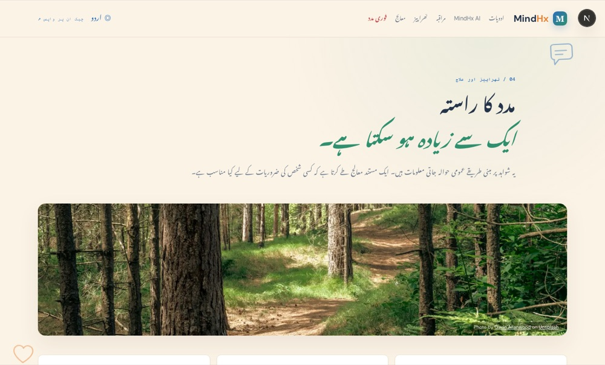
06 / اردو (Urdu, RTL)


06 / Urdu Language — Technical Safety
The AI's system prompt instructs Qwen to reply in the requested language - but LLMs don't always comply. MindHx adds a server-side guard, is_urdu_script(), that checks the letter composition of any generated reply. If Urdu was requested and the reply reads as English, it is discarded and replaced with the guaranteed-correct deterministic Urdu template.
if language == "ur" and not is_urdu_script(result["message"]):
return None # fall back to the verified-Urdu template
06 / Urdu Language — Being Honest
The Urdu translation of PHQ-9, GAD-7, and K10 is a careful draft for this session, not a licensed clinical instrument - stated plainly on-screen whenever Urdu is active. Item 9 (self-harm ideation) is safety-critical in the validated instrument; shipping an unlicensed translation as clinical-grade would be irresponsible.
The roadmap is explicit about this: partnering for a properly validated Urdu instrument is the single highest-leverage localization gap remaining.
07 / Functions
08 / Technical Architecture
A Next.js 16 (App Router) frontend and a FastAPI backend. The screening/risk-assessment endpoints are fully stateless. An optional layer adds PostgreSQL-backed accounts purely for people who choose to save history.
08 / Technical Architecture
| Endpoint | Purpose |
|---|---|
| POST /analyze-voice | Heuristic prosodic signal — pluggable via VOICE_BIOMARKER_PROVIDER |
| POST /analyze-text | Sentiment + crisis-language detection — Qwen (DashScope) → OpenRouter → local heuristic fallback |
| POST /ai/chat | Bounded, source-grounded chat; safety-gated; Urdu-script guard on generated replies |
| POST /risk-assess | Fuses all signals into the combined score, band, explanation, and routing decision |
| POST /score-phq9, /score-gad7, /score-k10 | Individual validated-questionnaire scoring |
| POST /auth/register, /auth/login | Optional account creation/sign-in — bcrypt + JWT |
| POST /synthesize | Urdu text-to-speech via Uplift AI |
08 / Quality & Safety Design
Crisis short-circuiting, bilingual AI chat responses, trend-aware replies, risk-fusion math, and the full account flow.
tsc --noEmit and eslint run clean on every change.
Every visual change verified via headless-Chrome screenshots in both English and Urdu.
Crisis-language re-check and the Urdu-script guard both discard unsafe generated output.
09 / Roadmap
09 / Future Possibilities
10 / Team
MindHx
MindHx